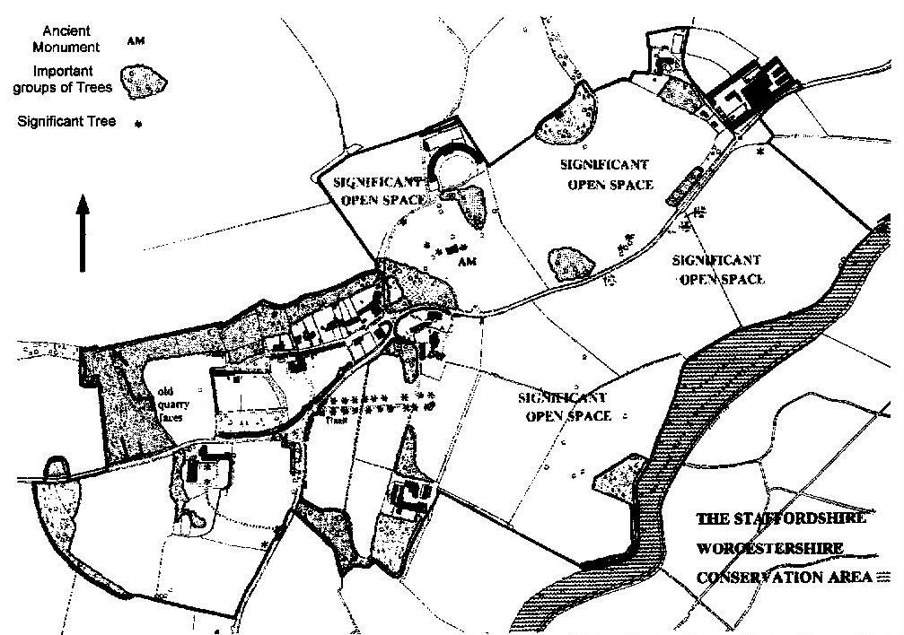

Welcome to Tixall
Sidebar on the right, content on the left.
Tixall is a small village about 2 miles east of Stafford, the county town of Staffordshire in England. The village lies on the northern side of the valley of the River Sow. The Church has the OS Map Reference SJ 978 228.
This year, 2001, there are 163 resident electors and 85 dwellings. Four Councillors represent Tixall on the Parish Council of Ingestre with Tixall. Local Information gives bus, mobile library times, etc.
History
The history of Tixall dates from before Domesday, with evidence of prehistoric activity at the Bronze Age barrows of Kings and Queens Low, both recently excavated by the Staffordshire Archaeology Society . Soon after Domesday, the manor passed to the De Wastney family, and was then to sold to Sir Thomas Littleton in the 15th century. Joan Littleton subsequently married Sir John Aston of Haywood in the early 16th century and Tixall remained with the Aston family and their descendants, the Cliffords, until it was sold to Earl Talbot of Ingestre in 1845. Until the 1960s Tixall was owned by Lord Shrewsbury, Earl Talbot's descendants. In 1960 the estate was divided up and sold, with several of the tenant farmers buying their farms.
A Local History Group meets monthly
Map showing Tixall Conservation Area

The Tixall Conservation Area includes the Quarry on Billy's Hill, Tixall Village, the field containing Tixall Mews, Tixall Farm, the Bottle Lodge, the meadows down to the Staffordshire Worcestershire Canal, Kennels Farm, Tixall Lodge and its surrounding fields.
Tixall is a Conservation Area and part of the Cannock Chase Area of Outstanding Natural Beauty (AONB). It also contains a Site of Special Scientific Interest, SSSI, on the wetlands between the river and the canal. The village contains several Listed Buildings, although only Tixall Church is open to the public:
- Early History of Tixall
- Tixall Church
- Tixall Hall
- Tixall Gatehouse
- Other Buildings in Tixall
- Tixall Farms
- Tixall Quarries
- The Staffordshire & Worcestershire Canal in Tixall
- Tixall Footpaths & Bridleways
External Links:
( Staffordshire Communities and Villages on the Web)
Anson Primary School, Great Haywood
Landmark Trust
Society of Recorder Players
Stafford Borough Heritage Group
Staffordshire Community CouncilStaffordshire Past Track Multimedia Archive
(incl. old pictures of Tixall)
Staffordshire Views Collection
(incl. old pictures of Tixall)